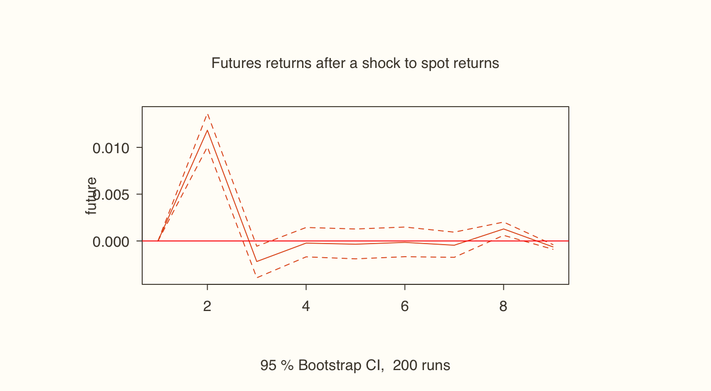

Forecast a series from its own past with ARIMA, then test who leads whom, Bitcoin spot or futures, using the right causality framework for the data. That's VAR, VECM or ARDL, depending on stationarity.
Every time-series project in this course follows the same opening routine:
1. Declare the data as a time series with ts(). 2. Plot it. 3. Test for stationarity with ADF. 4. Transform it if it's non-stationary (difference it, or take log differences). 5. Re-test the transformed series. 6. Only then forecast or test causality.
ARIMA(p, d, q): forecasting a series from its own past
A univariate model predicts a series using nothing but its own history, such as NIFTY's next 20 days or GDP's next 12 quarters.
Part
Meaning
Equation piece
AR(p)
Autoregressive: today depends on the last p values
φ₁yₜ₋₁ + … + φₚyₜ₋ₚ
I(d)
Integrated: difference d times to make it stationary
Δᵈyₜ
MA(q)
Moving average: today depends on the last q forecast errors
θ₁εₜ₋₁ + … + θ_qεₜ₋_q
Choosing p, d and q by hand means trying (1,1,0), (0,1,1), (2,1,1) and so on, then keeping the model with the lowest AIC. forecast::auto.arima() does that search for you.
Regression is not causality
Yₜ = α + βXₜ + εₜ links two things that happen at the same time. For X to cause Y, X has to come first:
Yₜ = α + Σ φᵢ Yₜ₋ᵢ + Σ βⱼ Xₜ₋ⱼ + εₜ
There are three rules: test both directions (X → Y and Y → X), test the short run and the long run, and always include Y's own lags, because a good causality model is autoregressive.
Choosing the causality framework
Stationarity of the series
Framework
Session
All stationary at level, I(0)
Granger causality + VAR
4.3–4.4
All I(1), stationary after one difference
Johansen cointegration + VECM
4.5
A mix of I(0) and I(1)
ARDL bounds test
4.6
Session 4.2
ARIMA in R: forecasting airline passengers
R
url <- "https://xploreai.co.in/courses/fda-r/data/"
rust <- "#E2571B"; espresso <- "#4A4238"
AP <- read.csv(paste0(url, "AirPassengers.csv"))
AP_T <- ts(AP$Passengers, frequency = 12, start = c(1949, 1))
library(urca)
summary(ur.df(AP_T))@teststat # level: above -1.95, so non-stationary
summary(ur.df(diff(AP_T)))@teststat # first difference: stationary
Console output
tau1
statistic -0.3524
tau1
statistic -8.6771
Let auto.arima choose the model
Give auto.arima() the level series. It tests and picks the number of differences (d) itself.
Causality with VAR, part 2: estimating and reading the VAR
A VAR fits one equation for each variable, each regressed on the lags of every variable. In VAR(data.frame(Y, X)) the first column is the one you treat as the effect.
R
model1 <- VAR(data.frame(future = future_R_T, spot = spot_R_T),
type = "const", lag.max = 5, ic = "AIC")
model1$p # lag chosen by AIC
round(coef(model1)$future, 4) # the futures equation only
An impulse-response function (IRF) traces how one series reacts over the next few days to a one-standard-deviation shock in the other.
R
ir <- irf(model1, impulse = "spot", response = "future", n.ahead = 8, boot = TRUE, runs = 200)
plot(ir, main = "Futures returns after a shock to spot returns", col = rust)
Plot output

Session 4.5
Causality with VECM: when prices share a long-run path
Prices, unlike returns, are usually I(1). If two I(1) prices are tied together in the long run, they are cointegrated: they can drift apart briefly, but an error-correction force pulls them back.
R
BS_T <- ts(bitcoin$Spot_Price, frequency = 252, start = c(2017, 245))
BF_T <- ts(bitcoin$Future_Price, frequency = 252, start = c(2017, 245))
ts.plot(BS_T, BF_T, col = c(rust, espresso), lwd = c(2, 1), ylab = "USD",
main = "Bitcoin spot (orange) and futures (dark) prices")
Causality with ARDL: when the orders of integration are mixed
What if one series is I(0) and the other I(1)? Spot returns are I(0) and futures prices are I(1). VAR needs everything I(0), and VECM needs everything I(1). ARDL (autoregressive distributed lag) works with the mix, and it has two more advantages:
Y and X can have different lag lengths.
The current value Xₜ can enter the model.
Yₜ = α + Σ φᵢ Yₜ₋ᵢ + β₀Xₜ + Σ βⱼ Xₜ₋ⱼ + εₜ
The long run: the Pesaran–Shin–Smith bounds test
F statistic
Conclusion
Below the I(0) lower bound
No cointegration
Above the I(1) upper bound
Cointegration, so check the error-correction term
In between
Inconclusive
Rshown, not run here
install.packages("dLagM")
R
library(dLagM)
btc <- data.frame(Spot_Return = bitcoin$Spot_Returns, Future_Price = bitcoin$Future_Price)
bound1 <- ardlBound(data = btc, formula = Spot_Return ~ Future_Price, case = 3,
p = data.frame(Spot_Return = 1, Future_Price = 5))
Console output
Breusch-Godfrey Test for the autocorrelation in residuals:
Breusch-Godfrey test for serial correlation of order up to 1
data: modelFull$model
LM test = 0.439, df1 = 1, df2 = 2008, p-value = 0.51
------------------------------------------------------
Ljung-Box Test for the autocorrelation in residuals:
Box-Ljung test
data: res
X-squared = 0.014, df = 1, p-value = 0.91
------------------------------------------------------
Breusch-Pagan Test for the homoskedasticity of residuals:
studentized Breusch-Pagan test
data: modelFull$model
BP = 19.9, df = 7, p-value = 0.0058
The p-value of Breusch-Pagan test for the homoskedasticity of residuals: 0.0057588 < 0.05!
------------------------------------------------------
Shapiro-Wilk test of normality of residuals:
Shapiro-Wilk normality test
data: modelFull$model$residual
W = 0.87, p-value <2e-16
The p-value of Shapiro-Wilk test normality of residuals: 4.9787e-38 < 0.05!
------------------------------------------------------
PESARAN, SHIN AND SMITH (2001) COINTEGRATION TEST
Observations: 2021
Number of Regressors (k): 1
Case: 3
------------------------------------------------------
- F-test -
------------------------------------------------------
<------- I(0) ------------ I(1) ----->
10% critical value 4.04 4.78
5% critical value 4.94 5.73
1% critical value 6.84 7.84
F-statistic = 542.336627291609
------------------------------------------------------
F-statistic note: Asymptotic critical values used.
------------------------------------------------------
Ramsey's RESET Test for model specification:
RESET test
data: modelECM$model
RESET = 3.88, df1 = 1, df2 = 2009, p-value = 0.049
the p-value of RESET test: 0.049039 < 0.05!
------------------------------------------------------
… (34 more lines in your console)
The short run: the distributed-lag model
R
dlm1 <- ardlDlm(x = btc$Future_Price, y = btc$Spot_Return, p = 5, q = 1)
summary(dlm1)$coefficients